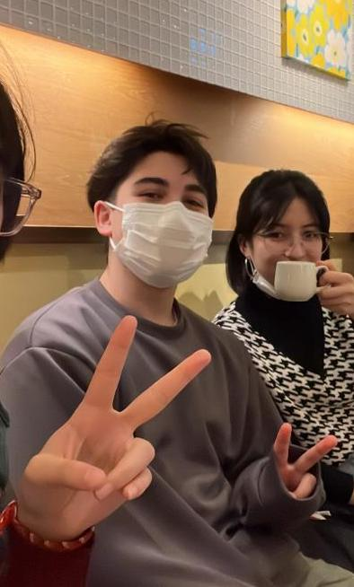
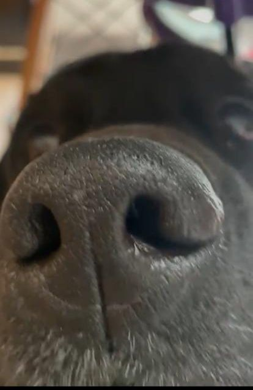

Información personal
Edad:19 años.
Fecha de nacimiento: 21/10/2003.
Nacionalidades:Chilena, Japonésa y Mexicana.
Formación académica
Estudiante de Diseño en la PUC,
Cursando segundo semestre.
No sé que poner aca pero necesito otra linea.
Habilidades
Idiomas:Español nativo, Ingles B2, Japonés básico.
softwares:Conocimiento básico de HTML,
Inkscape básico, Krita básico, Ilustrator básico.
Intereses y Gustos
Deportes: Volleyball.
Musica del momento: Benjamin Walker y Wallows.
Aprendiendo:< Coser a maquina, Diseño Grafico.
Mascotas: Kuro, Labrador Negro de 6 años<3.
